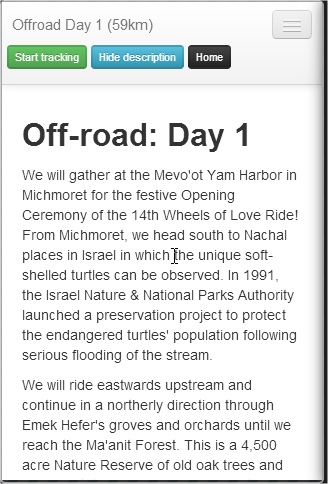

This page lists the apps main features. To return to the home page click here.
Start Screen
The start screen lets you:
- Choose your ride, such as on-road, off-road, challenge, etc
- Select a day of the ride (1 to 5)
- Elevation: Either hides or shows elevation information for that days ride.

Maps Page
The maps page displays:
- Header with map name and calculated distance
- The map with zoom and locate me controls
- Map with/without map elevation
- Toolbar

Expanding the tool bar displays additional controls
- Start/stop tracking
- Display ride description page
- Return to the home page
Description Page
Displays a description of the selected ride.
